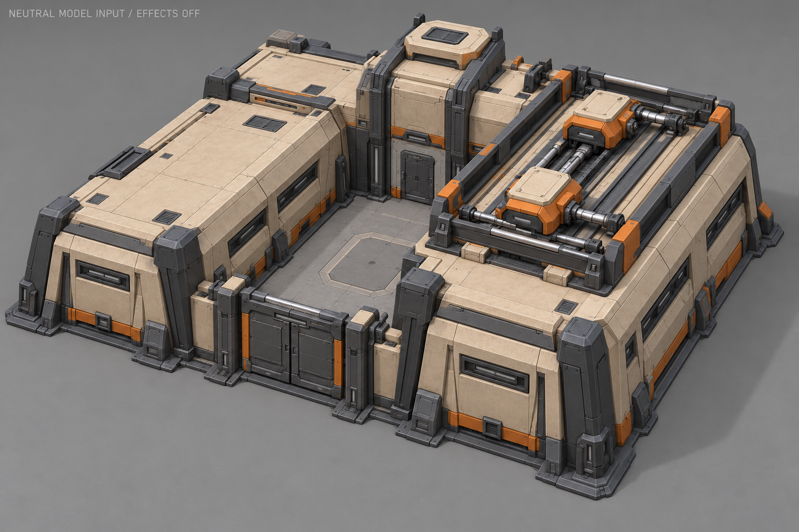
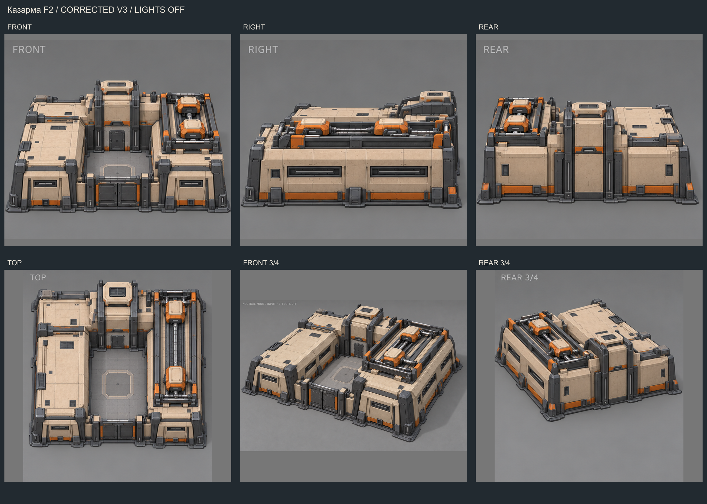
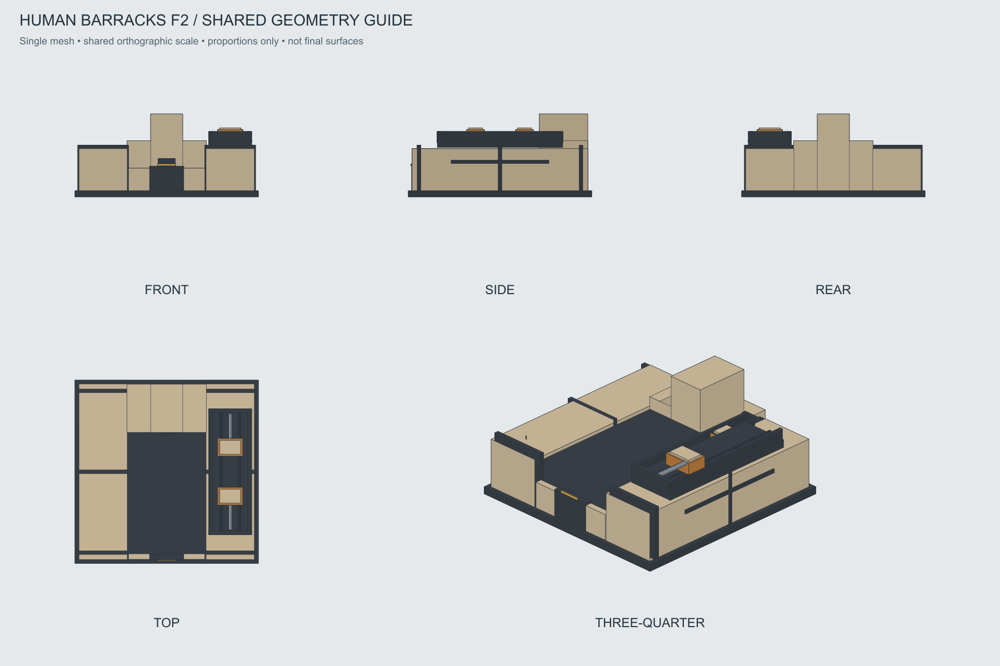

Казарма · F2 «Экипировочный модуль»
Выбрана 28 октября 2026. Две каретки на правой крыше — видимый цикл подготовки пехоты.
Паспорт моделирования и состояний · OBJ-каркас · Диапазоны хода · История выбора
Основной вид

Пять художественных видов

Проекции одного объёма

Схема движения
Две зоны хода, одна ось вдоль крыши. Рама неподвижна. Это условная схема сверху, не игровая анимация.
Габариты проверены на грубом каркасе; точные оболочки, приводы и игровые клипы ещё предстоит сделать.